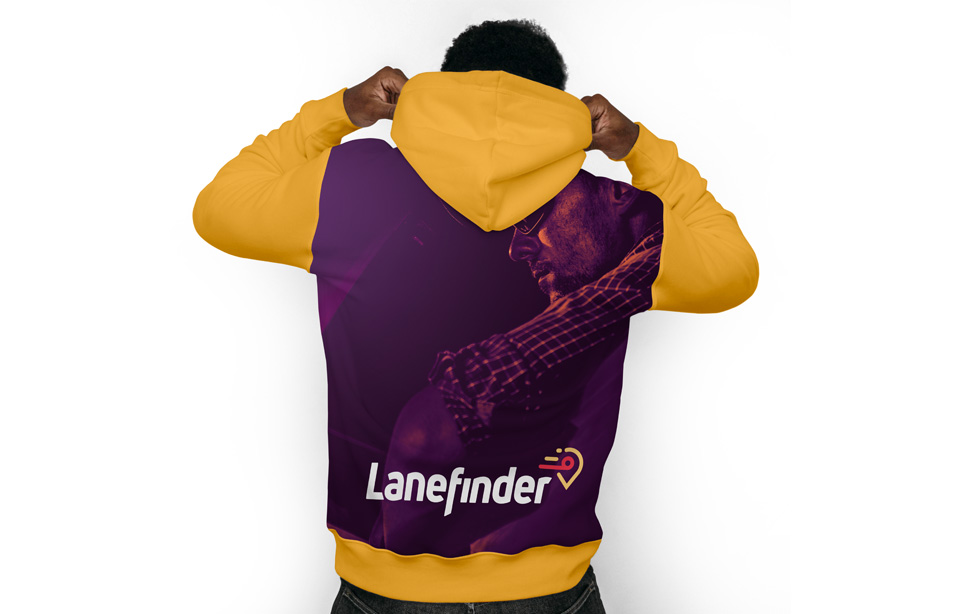
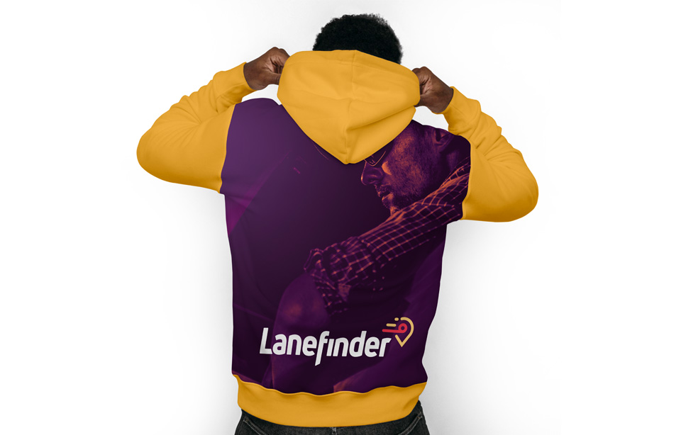
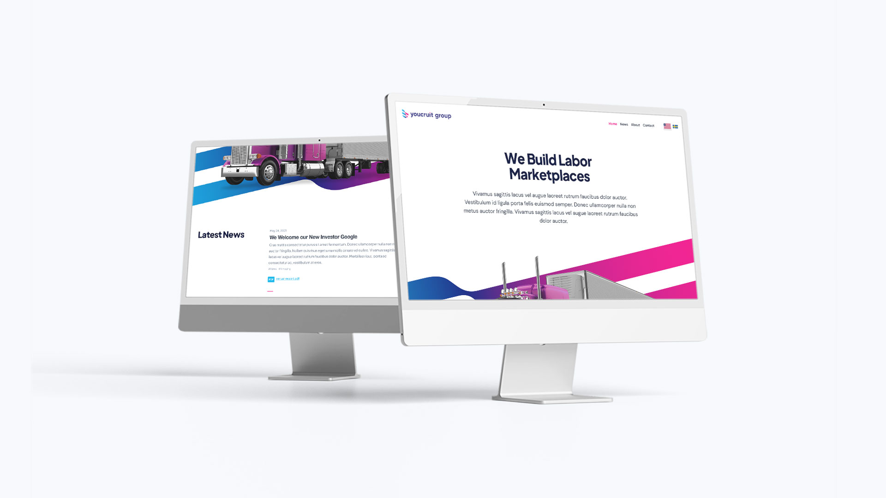
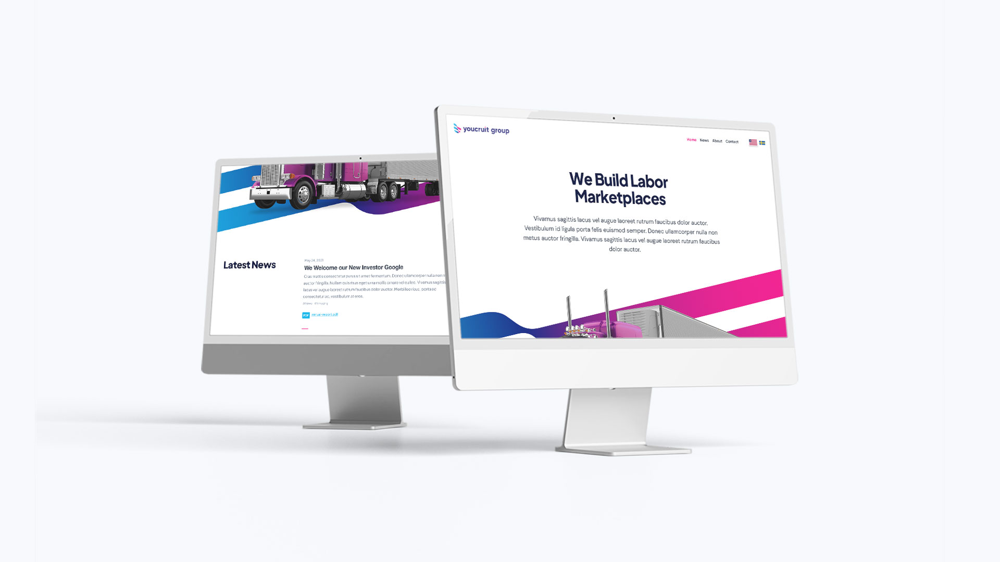

Portfolio of Artist & Art Director Mikael Cedergren
A curated collection of my work as an Art Director, Illustrator and Visual Artist.
Lanefinder
Truck Driver Recruitment Platform
Lanefinder, tailored specifically for truckers in the trucking industry, has swiftly established itself as a powerhouse within just two years. With an impressive roster of over 5,000+ job listings and a loyal customer base exceeding 7,000+, this platform has made its mark.
As the Art Director behind Lanefinder, I had the privilege of shaping its complete visual identity. Recognizing the need for a distinct brand image, my aim was to infuse Lanefinder with attitude and uniqueness. To achieve this, I opted for a slightly more feminine color scheme and drawing inspiration from typical American road signage.


 

YouCruit
Applicant Tracking System & Geophrey the Mascot
During my time at YouCruit, an Applicant Tracking System that initially emerged in Sweden and later expanded its presence to the US, I contributed to various creative aspects. I engaged in design, videography, explainers, logo development, and more.
Recognizing the need for an enhanced brand identity, I created and introduced Geophrey, a robot character that represents the underlying artificial intelligence of the system. He has appeared in explainer videos, animated iconography, and other creative productions. By dressing Geophrey in different outfits, he aligns with any concept or idea, and further reinforcing the YouCruit brand.
 



Peter Lindström
CD Cover and Promotional Photography
I had the pleasure of working alongside singer/songwriter Peter Lindström, where I created promotional photography and a CD cover. Remarkably, the original song later became the theme music for Växjö Lakers.


Brainteam
Freelance Branding
As a favor to a friend applying for a web design position, I took on an unofficial project. She shared the brief with me, I felt inspired, and created the entire brand within 24 hours.
The good news is that my friend successfully secured the job, and to my surprise, the company reached out to me. They were impressed with the branding I had developed and decided to purchase the entire package without any modifications.


BetCreative
Betting Company

Like Brothers
Book Cover
I had the opportunity to design a book cover for a romance novel written by Ola Hasselgren. This heartfelt story revolves around two characters and their dramatic love affair in the air travel business.

Sveriges Television
Motion Graphics Showreel
I had the privilege of working as a Motion Designer at SVT, the public broadcaster of Sweden. This showreel showcases some of my past works during my time there. Please keep in mind that this reel reflects my skills from some time ago. Since then, I have made significant strides in my craft.
I especially take pride in conceptualizing the idea for "På Spåret" of filming toy trains, while obviously faking a sense of realism. Although my original intro has since been replaced, I am glad to see that other graphic artists have followed my concept, keeping its essence alive to this day.
Continuum
Branding Concept
A personal project inspired by the concept of a gaming company, where I envisioned and developed a fictional brand called "Continuum" and created a brand based on my own brief.


Deprecated Design of MikaelCedergren.com
Personal Brand
My own branding, based on my own artistic vein. I've always had a fascination of the coat of arms and detailed logos are just too much fun.


Bubbloo
Game Concept
A personal project with the aim of simply exploring the more playful realm of design.

Batman
Unofficial Tribute Trailer
Motivated by my deep passion for trailers and movies, I decided to create my very first trailer, despite only having access to the finished edit of the movie.